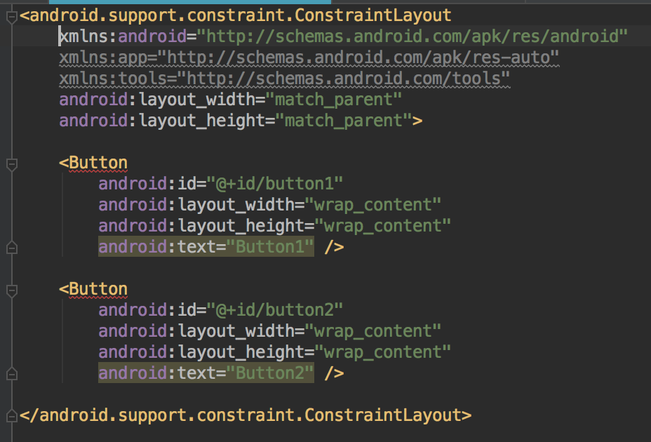
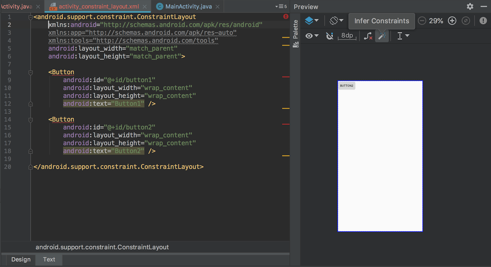
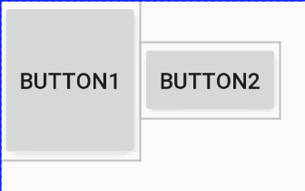
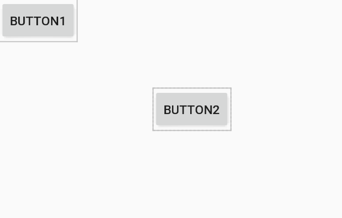
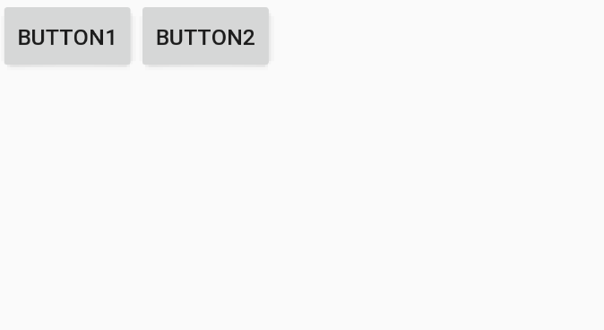
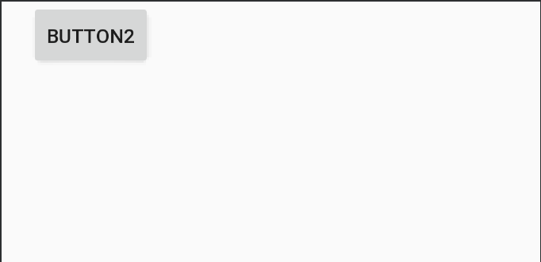
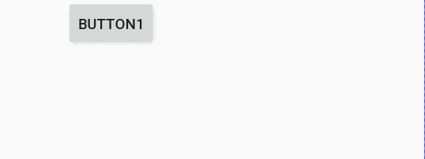
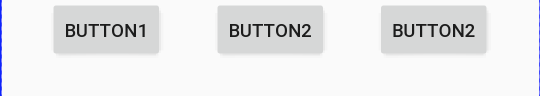
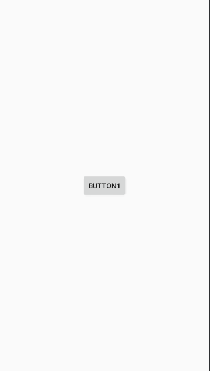
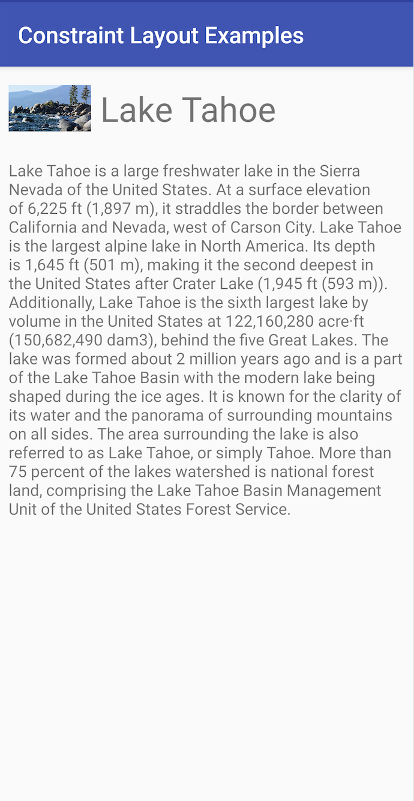

简介
ConstraintLayout 作为 Android 在 support 包中提供的一个 ViewGroup 被 Google 官方推荐使用，ConstraintLayout 可以灵活调整它的布局元素，减少布局层级。 全面、最新的介绍还是要看 Android 官方文档。 Google ConstraintLayout文档 想看例程源码可以看 Android views-widgets-samples github 源码
特点
对比其他布局，比如 LinearLayout，我们很容易发现它的优点：
- 使用简洁，减少嵌套布局。
- 使用方便，可以再 Preview 面板拖动控件来改变布局
- ConstraintLayout 使用灵活（一些辅助工具：Barrier、Group、Guideline等等）
- 性能更优。（LinearLayout 嵌套过多，RelativeLayout 子控件需要重复测量两次）
使用
添加依赖
在 build.gradle 中添加：
implementation 'com.android.support.constraint:constraint-layout:1.1.3'
我们往 ConstraintLayout 里面添加布局时可以遇到下面的问题，出现警告，布局名称下面出现红色的波浪线：

这是因为在使用 ConstraintLayout 布局时，它的子控件需要使用约束条件。虽然这些警告并不影响呈现的编译和运行，但是却违背了我们使用 ConstraintLayout 布局的一些规则。
消除警告的方法就是添加约束条件，具体有哪些约束条件我们下面会详细介绍。还有个快捷方法是在 Preview 窗口里面点击小魔法棒，会帮助根据现有布局方式添加一些约束条件，旁边的小叉叉是去除所有约束条件的按钮。

约束条件
相对定位
ConstraintLayout相对定位的用法跟RelativeLayout还是比较相似，有下面一些属性可以设置：
- layout_constraintLeft_toLeftOf
- layout_constraintLeft_toRightOf
- layout_constraintRight_toLeftOf
- layout_constraintRight_toRightOf
- layout_constraintTop_toTopOf
- layout_constraintTop_toBottomOf
- layout_constraintBottom_toTopOf
- layout_constraintBottom_toBottomOf
- layout_constraintStart_toEndOf
- layout_constraintStart_toStartOf
- layout_constraintEnd_toStartOf
- layout_constraintEnd_toEndOf
- layout_constraintBaseline_toBaselineOf
上面几个属性使用方法从字面意思大概都能有个理解，把定位组件的前后左右属性作为当前组件的前后左右属性来进行定位。
介绍一下 layout_constraintBaseline_toBaselineOf 的用法。
Baseline 表示的控件的基线，如下面代码表示：
<Button
android:id="@+id/button2"
android:layout_width="wrap_content"
android:layout_height="wrap_content"
android:text="Button2"
app:layout_constraintLeft_toRightOf="@id/button1"
app:layout_constraintBaseline_toBaselineOf="@id/button1" />
效果图：

这样可以做到高度不同的两个的Button的文本是对齐的。 可以使用下面的约束来使宽度不同的组件垂直中心对齐：
<androidx.constraintlayout.widget.ConstraintLayout xmlns:android="http://schemas.android.com/apk/res/android"
xmlns:app="http://schemas.android.com/apk/res-auto"
xmlns:tools="http://schemas.android.com/tools"
android:layout_width="match_parent"
android:layout_height="wrap_content">
<Button
android:id="@+id/button1"
android:layout_width="160dp"
android:layout_height="80dp"
android:layout_marginLeft="32dp"
android:text="Button1"
app:layout_constraintLeft_toLeftOf="parent"
app:layout_constraintTop_toTopOf="parent" />
<Button
android:id="@+id/button2"
android:layout_width="wrap_content"
android:layout_height="wrap_content"
android:text="Button2"
app:layout_constraintLeft_toLeftOf="@id/button1"
app:layout_constraintRight_toRightOf="@id/button1"
app:layout_constraintTop_toBottomOf="@id/button1"/>
</androidx.constraintlayout.widget.ConstraintLayout>
角度定位
ConstraintLayout 提供了利用角度和距离来约束定位的属性：
- layout_constraintCircle：角度约束
- layout_constraintCircleAngle：角度
- layout_constraintCircleRadius：半径
<Button
android:id="@+id/button2"
android:layout_width="wrap_content"
android:layout_height="wrap_content"
android:text="Button2"
app:layout_constraintCircle="@id/button1"
app:layout_constraintCircleAngle="120"
app:layout_constraintCircleRadius="200dp" />
效果图：

依赖组件为Gone的约束
在ConstraintLayout中，如果设置了一个控件（A）依赖于另一个控件(B)，当控件B设置为GONE时，A控件的位置就会发生变化。为了保持适当的效果，需要设置此种情况下A控件相对于父控件的距离。可以通过如下属性设置依赖控件为GONE时相对父控件的距离：
- layout_goneMarginStart
- layout_goneMarginEnd
- layout_goneMarginLeft
- layout_goneMarginTop
- layout_goneMarginRight
- layout_goneMarginBottom
边距
常规用法
- android:layout_marginStart
- android:layout_marginEnd
- android:layout_marginLeft
- android:layout_marginTop
- android:layout_marginRight
- android:layout_marginBottom
这是 Android 组件的通用属性，和其他组件的用法没有太大区别。需要注意的是这些设置边距的属性必须是在设置好约束布局条件（设置约束布局的属性）下才会生效。
goneMargin
goneMargin主要用于约束的控件可见性被设置为gone的时候使用的margin值，属性如下：
- layout_goneMarginStart
- layout_goneMarginEnd
- layout_goneMarginLeft
- layout_goneMarginTop
- layout_goneMarginRight
- layout_goneMarginBottom
<Button
android:id="@+id/button1"
android:layout_width="wrap_content"
android:layout_height="wrap_content"
android:text="Button1"
app:layout_constraintLeft_toLeftOf="parent"
app:layout_constraintTop_toTopOf="parent" />
<Button
android:id="@+id/button2"
android:layout_width="wrap_content"
android:layout_height="wrap_content"
android:text="Button2"
app:layout_goneMarginLeft="20dp"
app:layout_constraintLeft_toRightOf="@+id/button1"
app:layout_constraintTop_toTopOf="@+id/button1" />
在 button1 可见的情况下，button2在button1的右边，且没有边距。 效果图：

设置button1 为 gone，button1小时，button2 左边出现 20dp 的间距。 效果图：

偏移
- layout_constraintHorizontal_bias
- layout_constraintVertical_bias
除了可以通过上面的边距设置偏移之外，还可以通过上面两个属性来设置偏移。
<Button
android:id="@+id/button1"
android:layout_width="wrap_content"
android:layout_height="wrap_content"
android:text="Button1"
app:layout_constraintHorizontal_bias="0.2"
app:layout_constraintLeft_toLeftOf="parent"
app:layout_constraintRight_toRightOf="parent"/>
效果图：

尺寸约束
常规属性
- 使用指定的尺寸。
使用wrap_content，可以使用android:minWidth、android:minHeight、android:maxWidth、android:maxHeight等常规属性来约束。注意！当ConstraintLayout为1.1版本以下时，使用这些属性需要加上强制约束，如下所示：
app:constrainedWidth=”true” app:constrainedHeight=”true”- 使用 0dp (MATCH_CONSTRAINT)，官方不推荐在ConstraintLayout中使用match_parent，可以设置 0dp (MATCH_CONSTRAINT) 配合约束代替match_parent。
宽高比
- layout_constraintDimensionRatio
当宽或高至少有一个尺寸被设置为0dp时，可以通过属性layout_constraintDimensionRatio设置宽高比，举个例子：
<Button
android:id="@+id/button1"
android:layout_width="0dp"
android:layout_height="wrap_content"
android:text="Button1"
app:layout_constraintDimensionRatio="1:1"
app:layout_constraintLeft_toLeftOf="parent"
app:layout_constraintRight_toRightOf="parent"/>
效果图：
除此之外，在设置宽高比的值的时候，还可以在前面加W或H，分别指定宽度或高度限制。 例如：
app:layout_constraintDimensionRatio="H,2:3"指的是 高:宽=2:3
app:layout_constraintDimensionRatio="W,2:3"指的是 宽:高=2:3
链
如果两个或以上控件通过约束属性约束在一起，就可以认为是他们是一条链，或为水平链，或为垂直链。
<androidx.constraintlayout.widget.ConstraintLayout
xmlns:android="http://schemas.android.com/apk/res/android"
xmlns:app="http://schemas.android.com/apk/res-auto"
android:layout_width="match_parent"
android:layout_height="wrap_content">
<Button
android:id="@+id/button1"
android:layout_width="wrap_content"
android:layout_height="wrap_content"
android:text="Button1"
app:layout_constraintLeft_toLeftOf="parent"
app:layout_constraintRight_toLeftOf="@id/button2"
app:layout_constraintTop_toTopOf="parent"/>
<Button
android:id="@+id/button2"
android:layout_width="wrap_content"
android:layout_height="wrap_content"
android:text="Button2"
app:layout_constraintTop_toTopOf="parent"
app:layout_constraintLeft_toRightOf="@+id/button1"
app:layout_constraintRight_toLeftOf="@+id/button3"/>
<Button
android:id="@+id/button3"
android:layout_width="wrap_content"
android:layout_height="wrap_content"
android:text="Button3"
app:layout_constraintTop_toTopOf="parent"
app:layout_constraintLeft_toRightOf="@+id/button2"
app:layout_constraintRight_toRightOf="parent"/>
</androidx.constraintlayout.widget.ConstraintLayout>

一条链的第一个控件是这条链的链头，我们可以在链头中设置 layout_constraintHorizontal_chainStyle 来改变整条链的样式。chains提供了3种样式，分别是：
- spread：展开元素 (默认)
- spread_inside：展开元素，链的两端贴近parent；
- packed：链的元素收缩在中间
如果你发现这些链的样式没有起作用，可能是组件之间的约束没写好，组件的左右约束都要写上。 还可以通过下面的属性来设置链条的权重
- layout_constraintHorizontal_weight
- layout_constraintVertical_weight
注意：设置权重时对应的 layout_width 或者 layout_height 要设置为 0dp，和 layout_weight 比较类似。
如果我们想使一条水平链上的两个元素填充满一行，那么可以指定一个元素的大小，另外一个元素的宽度设置为0，并为这个元素指定左侧和右侧链来实现：
<EditText
android:id="@+id/verify_code"
android:layout_width="0dp"
android:layout_height="40dp"
app:layout_constraintTop_toBottomOf="@id/phone_num"
app:layout_constraintLeft_toLeftOf="parent"
app:layout_constraintRight_toLeftOf="@id/send_verify"/>
<androidx.appcompat.widget.AppCompatButton
android:id="@+id/send_verify"
android:layout_width="100dp"
android:layout_height="40dp"
app:layout_constraintTop_toBottomOf="@id/phone_num"
app:layout_constraintRight_toRightOf="parent"/>
小技巧
居中
<Button
android:id="@+id/button1"
android:layout_width="wrap_content"
android:layout_height="wrap_content"
android:text="Button1"
app:layout_constraintLeft_toLeftOf="parent"
app:layout_constraintRight_toRightOf="parent"
app:layout_constraintTop_toTopOf="parent"
app:layout_constraintBottom_toBottomOf="parent"/>
效果图：

控件整体居中
可以通过 'layout_constraintVertical_chainStyle' 来实现。
<androidx.constraintlayout.widget.ConstraintLayout xmlns:android="http://schemas.android.com/apk/res/android"
xmlns:app="http://schemas.android.com/apk/res-auto"
xmlns:tools="http://schemas.android.com/tools"
android:layout_width="match_parent"
android:layout_height="match_parent"
tools:context=".views.circleviewpager.CircleViewPagerActivity">
<Button
android:id="@+id/view"
android:layout_width="200dp"
android:layout_height="200dp"
app:layout_constraintVertical_chainStyle="packed"
app:layout_constraintBottom_toTopOf="@id/view1"
app:layout_constraintTop_toTopOf="parent"
app:layout_constraintStart_toStartOf="parent"
app:layout_constraintEnd_toEndOf="parent"/>
<Button
android:id="@+id/view1"
android:layout_width="200dp"
android:layout_height="200dp"
app:layout_constraintTop_toBottomOf="@id/view"
app:layout_constraintBottom_toBottomOf="parent"
app:layout_constraintStart_toStartOf="parent"
app:layout_constraintEnd_toEndOf="parent" />
</androidx.constraintlayout.widget.ConstraintLayout>
辅助工具
ConstraintSet
ConstraintLayout 提供了 ConstraintSet 来动态修改约束条件，并且中间可以伴随动画实现过渡效果。 提供了很多灵活好用的方法，主要方法如下：
- clone()：copy了整个布局的控件与属性
- connect()：设置两个组件的相对位置
- centerHorizontally()：设置水平居中
- constrainHeight()：设置某个布局的高度
- applyTo()：apply一下使设置生效。
下面是官方提供的 Demo 来实现布局切换的代码：
constraintset_example_main.xml
<androidx.constraintlayout.widget.ConstraintLayout xmlns:android="http://schemas.android.com/apk/res/android"
xmlns:app="http://schemas.android.com/apk/res-auto"
xmlns:tools="http://schemas.android.com/tools"
android:id="@+id/activity_constraintset_example"
android:layout_width="match_parent"
android:layout_height="match_parent" >
<ImageView
android:id="@+id/imageView"
android:layout_width="0dp"
android:layout_height="0dp"
android:layout_marginStart="8dp"
android:onClick="toggleMode"
android:scaleType="centerCrop"
android:src="@drawable/lake"
app:layout_constraintBottom_toBottomOf="@+id/textView9"
app:layout_constraintDimensionRatio="w,16:9"
app:layout_constraintLeft_toLeftOf="parent"
app:layout_constraintTop_toTopOf="@+id/textView9"
tools:layout_constraintBottom_creator="1"
tools:layout_constraintTop_creator="1"
android:contentDescription="@string/lake_tahoe_image"
app:layout_constraintVertical_bias="0.0" />
<TextView
android:id="@+id/textView9"
android:layout_width="wrap_content"
android:layout_height="wrap_content"
android:layout_marginStart="8dp"
android:layout_marginTop="16dp"
android:text="@string/lake_tahoe_title"
android:textSize="30sp"
app:layout_constraintLeft_toRightOf="@+id/imageView"
app:layout_constraintTop_toTopOf="parent" />
<TextView
android:id="@+id/textView11"
android:layout_width="0dp"
android:layout_height="0dp"
android:layout_marginBottom="8dp"
android:layout_marginEnd="8dp"
android:layout_marginStart="8dp"
android:layout_marginTop="24dp"
android:text="@string/lake_discription"
app:layout_constraintBottom_toBottomOf="parent"
app:layout_constraintLeft_toLeftOf="parent"
app:layout_constraintRight_toRightOf="parent"
app:layout_constraintTop_toBottomOf="@+id/imageView"
tools:layout_constraintBottom_creator="1"
tools:layout_constraintLeft_creator="1"
tools:layout_constraintRight_creator="1"
tools:layout_constraintTop_creator="1" />
</androidx.constraintlayout.widget.ConstraintLayout>
constraintset_example_big.xml
<androidx.constraintlayout.widget.ConstraintLayout xmlns:android="http://schemas.android.com/apk/res/android"
xmlns:app="http://schemas.android.com/apk/res-auto"
xmlns:tools="http://schemas.android.com/tools"
android:id="@+id/activity_constraintset_example"
android:layout_width="match_parent"
android:layout_height="match_parent" >
<ImageView
android:id="@+id/imageView"
android:layout_width="0dp"
android:layout_height="0dp"
android:layout_marginEnd="24dp"
android:layout_marginStart="24dp"
android:layout_marginTop="24dp"
android:onClick="toggleMode"
android:scaleType="centerCrop"
android:src="@drawable/lake"
app:layout_constraintDimensionRatio="h,16:9"
app:layout_constraintLeft_toLeftOf="parent"
app:layout_constraintRight_toRightOf="parent"
app:layout_constraintTop_toTopOf="parent"
tools:layout_constraintLeft_creator="1"
tools:layout_constraintRight_creator="1"
android:contentDescription="@string/lake_tahoe_image" />
<TextView
android:id="@+id/textView9"
android:layout_width="wrap_content"
android:layout_height="wrap_content"
android:text="@string/lake_tahoe_title"
android:textSize="30sp"
app:layout_constraintLeft_toLeftOf="@+id/imageView"
android:layout_marginTop="8dp"
app:layout_constraintTop_toBottomOf="@+id/imageView" />
<TextView
android:id="@+id/textView11"
android:layout_width="0dp"
android:layout_height="0dp"
android:text="@string/lake_discription"
app:layout_constraintLeft_toLeftOf="@+id/textView9"
android:layout_marginTop="8dp"
app:layout_constraintTop_toBottomOf="@+id/textView9"
app:layout_constraintRight_toRightOf="@+id/imageView"
app:layout_constraintBottom_toBottomOf="parent"
android:layout_marginBottom="16dp"
tools:layout_constraintTop_creator="1"
tools:layout_constraintBottom_creator="1"
app:layout_constraintHorizontal_bias="0.0"
app:layout_constraintVertical_bias="0.0" />
</androidx.constraintlayout.widget.ConstraintLayout>
public class ConstraintSetExampleActivity extends AppCompatActivity {
private static final String SHOW_BIG_IMAGE = "showBigImage";
/**
* Whether to show an enlarged image
*/
private boolean mShowBigImage = false;
/**
* The ConstraintLayout that any changes are applied to.
*/
private ConstraintLayout mRootLayout;
/**
* The ConstraintSet to use for the normal initial state
*/
private ConstraintSet mConstraintSetNormal = new ConstraintSet();
/**
* ConstraintSet to be applied on the normal ConstraintLayout to make the Image bigger.
*/
private ConstraintSet mConstraintSetBig = new ConstraintSet();
@Override
protected void onCreate(Bundle savedInstanceState) {
super.onCreate(savedInstanceState);
setContentView(R.layout.constraintset_example_main);
mRootLayout = (ConstraintLayout) findViewById(R.id.activity_constraintset_example);
// Note that this can also be achieved by calling
// `mConstraintSetNormal.load(this, R.layout.constraintset_example_main);`
// Since we already have an inflated ConstraintLayout in `mRootLayout`, clone() is
// faster and considered the best practice.
mConstraintSetNormal.clone(mRootLayout);
// Load the constraints from the layout where ImageView is enlarged.
mConstraintSetBig.load(this, R.layout.constraintset_example_big);
if (savedInstanceState != null) {
boolean previous = savedInstanceState.getBoolean(SHOW_BIG_IMAGE);
if (previous != mShowBigImage) {
mShowBigImage = previous;
applyConfig();
}
}
}
@Override
public void onSaveInstanceState(Bundle outState) {
super.onSaveInstanceState(outState);
outState.putBoolean(SHOW_BIG_IMAGE, mShowBigImage);
}
// Method called when the ImageView within R.layout.constraintset_example_main
// is clicked.
public void toggleMode(View v) {
TransitionManager.beginDelayedTransition(mRootLayout);
mShowBigImage = !mShowBigImage;
applyConfig();
}
private void applyConfig() {
if (mShowBigImage) {
mConstraintSetBig.applyTo(mRootLayout);
} else {
mConstraintSetNormal.applyTo(mRootLayout);
}
}
}
直接上两个转换后的效果图吧，不弄gif动图了：

上面的列子提供了两个布局来实现切换，实际我们还可以只使用一种布局，调用 ConstraintSet 提供的方法来实现布局的切换，这样就不用提供两种布局了。比如在横竖屏切换需要变化布局时也可以这样使用。
ConstraintSet constraintSet = new ConstraintSet();
constraintSet.clone(mNotificationContainerParent);
if (mShouldUseSplitNotificationShade) {
constraintSet.connect(R.id.qs_frame, END, R.id.qs_edge_guideline, END);
constraintSet.connect(
R.id.notification_stack_scroller, START,
R.id.qs_edge_guideline, START);
constraintSet.connect(R.id.keyguard_status_view, END, R.id.qs_edge_guideline, END);
} else {
constraintSet.connect(R.id.qs_frame, END, PARENT_ID, END);
constraintSet.connect(R.id.notification_stack_scroller, START, PARENT_ID, START);
constraintSet.connect(R.id.keyguard_status_view, END, PARENT_ID, END);
}
constraintSet.getConstraint(R.id.notification_stack_scroller).layout.mWidth = panelWidth;
constraintSet.getConstraint(R.id.qs_frame).layout.mWidth = qsWidth;
constraintSet.applyTo(mNotificationContainerParent);
Optimizer
ConstraintLayout 在 1.1 的版本中添加了 Optimizer，来提供一些优化的选项。（当我们使用 MATCH_CONSTRAINT 时，ConstraintLayout 将对控件进行 2 次测量。）
- none : 无优化
- standard : 默认优化，优化 direct 和 barrier
- direct : 优化直接约束
- barrier : 优化屏障约束
- chain : 优化链约束
- dimensions : 优化尺寸测量
另外还可以像下面这种组合配置：
app:layout_optimizationLevel="direct|barrier|chain"
Barrier
Group
Placeholder
Guideline
ConstraintProperties
在 2.0 版本中添加
ConstraintsChangedListener
在 2.0 版本中添加